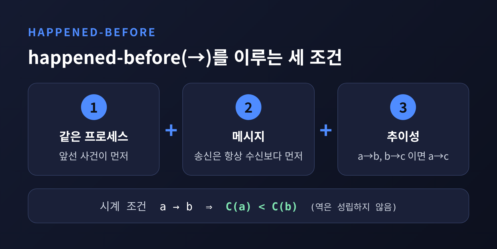
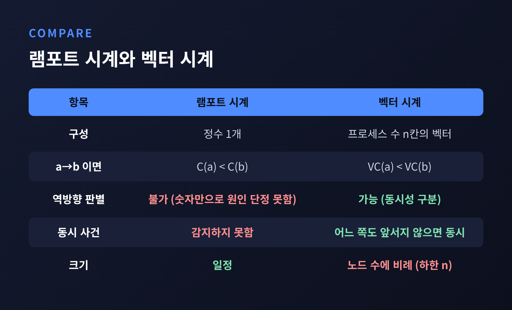
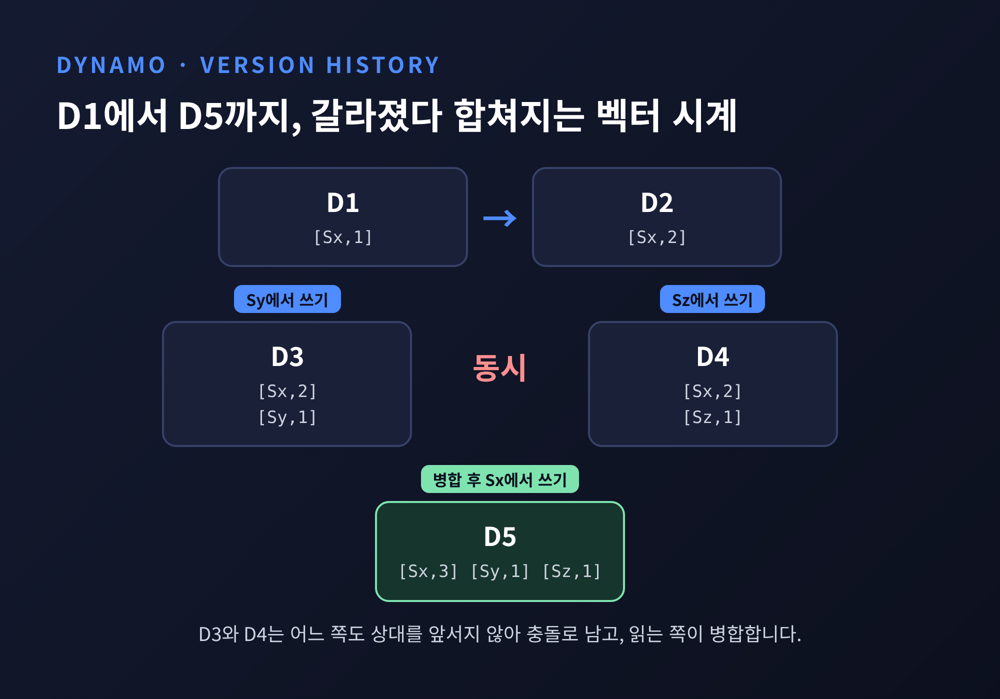
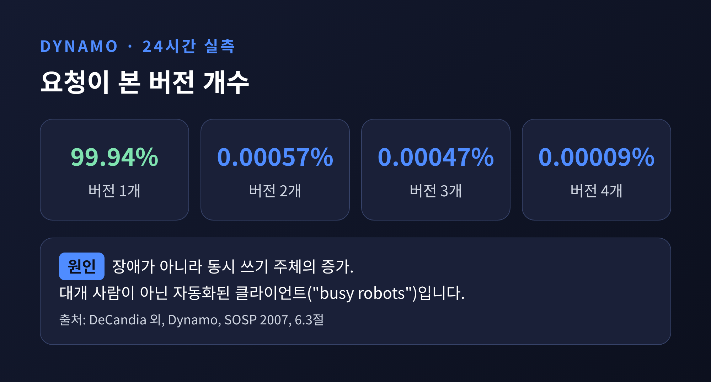
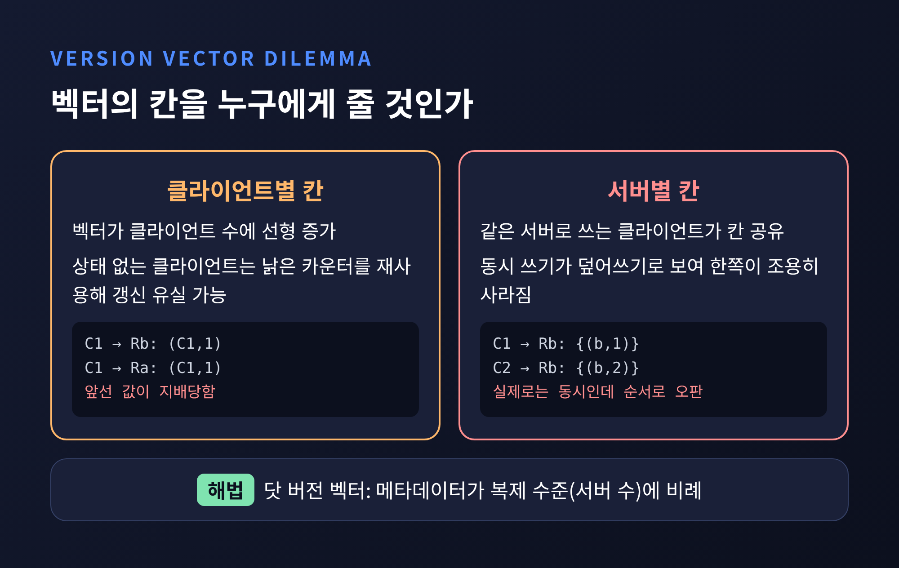
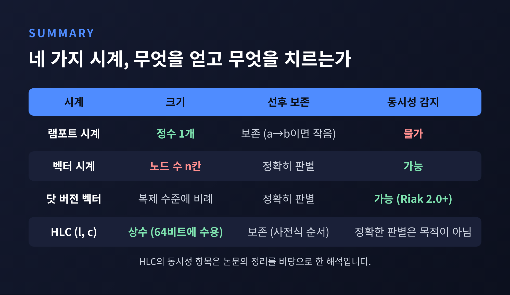

[IT] 램포트 시계에서 벡터 시계, Dynamo와 Riak, 그리고 HLC까지
이번 글에서는 분산 시스템이 "어느 사건이 먼저인가"를 어떻게 판단하는지 정리해 보겠습니다. 물리 시계 대신 인과 관계로 순서를 정하는 램포트 시계와 벡터 시계, 그리고 Dynamo와 Riak이 이를 어떻게 쓰는지 다룹니다.
먼저 요약부터 드립니다. 램포트 시계는 "먼저"를 줄 세울 수 있지만 "동시"를 알아보지 못합니다. 벡터 시계는 동시까지 가려내는 대신 노드 수만큼 크기가 커집니다. 실제 시스템은 이 비용을 줄이는 쪽으로 진화해 왔습니다.
두 서버가 같은 키에 거의 동시에 값을 썼다고 해 보겠습니다. 타임스탬프가 큰 쪽을 최신으로 보면 간단해 보입니다. 하지만 서버마다 시계가 조금씩 어긋나 있습니다.
HLC 논문은 NTP 기반 물리 시간의 한계를 이렇게 짚습니다. 오차 구간이 겹치는 두 사건은 순서를 정할 수 없고, 윤초나 비단조적 보정 때문에 타임스탬프가 거꾸로 가기도 합니다. CockroachDB 블로그에 따르면 NTP 동기화로는 오프셋이 100ms에서 250ms 수준까지 날 수 있습니다.
Riak 공식 문서의 표현은 더 직설적입니다. 타임스탬프는 "분산 시스템에서 믿을 만한 해결 수단이 아니며" 데이터 손실 위험이 있다고 경고합니다.
그래서 접근을 바꿉니다. 몇 시에 일어났는지가 아니라, 무엇이 무엇에 영향을 줄 수 있었는지를 봅니다. 이것이 인과 일관성의 출발점입니다.
1978년 Leslie Lamport는 Communications of the ACM에 "Time, Clocks, and the Ordering of Events in a Distributed System"을 발표했습니다. 핵심은 happened-before(→) 관계입니다. 논문은 이를 세 조건을 만족하는 가장 작은 관계로 정의합니다.

시계를 붙이는 규칙은 두 가지입니다. 각 프로세스는 사건 사이마다 자기 카운터를 올립니다. 메시지에는 타임스탬프를 실어 보내고, 받은 쪽은 자기 카운터를 현재 값과 메시지 값보다 크게 맞춥니다. 이렇게 하면 a → b일 때 항상 C(a) < C(b)가 성립합니다. 논문은 이를 시계 조건이라 부릅니다.
값이 같을 때는 프로세스 번호처럼 임의로 정한 순서로 동률을 깨, 모든 사건을 한 줄로 세울 수 있습니다. 다만 Lamport 자신이 밝혔듯 이 전체 순서는 유일하지 않습니다. 시스템의 사건들로 유일하게 정해지는 것은 부분 순서뿐입니다.
여기에 한계가 있습니다. 시계 조건은 한 방향만 보장합니다. C(a) < C(b)라고 해서 a가 b의 원인이라는 뜻은 아닙니다. 두 사건이 서로 영향을 줄 수 없는 동시(concurrent) 관계여도 숫자는 어느 한쪽이 더 작게 나옵니다. 숫자만 봐서는 "앞선 것"과 "동시인 것"을 구분할 길이 없습니다.
벡터 시계는 카운터 하나를 프로세스 수만큼의 벡터로 늘린 것입니다. 1980년대 초부터 여러 연구자가 독립적으로 고안했고, 1988년 Fidge와 Mattern의 연구가 표준 참고문헌이 되었습니다.
규칙은 단순합니다. 모든 칸은 0에서 시작합니다. 사건이 생기면 자기 칸을 1 올립니다. 메시지를 보낼 때 벡터 사본을 함께 보내고, 받은 쪽은 자기 칸을 올린 뒤 두 벡터를 칸별 최댓값으로 합칩니다.
비교 방식이 핵심입니다. A의 모든 칸이 B의 대응 칸 이하이고 한 칸 이상 엄격히 작으면, A는 B보다 먼저 일어난 사건입니다. 어느 쪽도 이 조건을 만족하지 못하면 두 사건은 동시입니다. 예를 들어 세 프로세스에서 [2,1,0]과 [1,2,0]을 비교하면 첫 칸은 앞쪽이 크고 둘째 칸은 뒤쪽이 큽니다. 어느 쪽도 상대를 앞서지 않으니 동시로 판정합니다.

대가는 크기입니다. n개 프로세스면 벡터도 n칸이 필요합니다. Charron-Bost는 n개 프로세스의 동시성을 정확히 표현하려면 시계의 차원이 최소 n이어야 함을 보였습니다. 1990년 전후에 나온 이 결과 때문에, 벡터 시계가 커지는 것은 구현이 서툴러서가 아니라 구조적인 문제로 받아들여집니다. Peter Bailis도 2014년 글에서 정보이론적 증명은 열린 문제로 남아 있지만 더 작은 표현은 아직 발견되지 않았다고 정리했습니다.
2007년 SOSP에서 공개된 Amazon의 Dynamo 논문은 벡터 시계를 실제 저장소에 적용한 대표 사례입니다. 객체의 각 버전에 (node, counter) 쌍의 목록을 붙여 같은 객체의 버전 사이 인과를 기록합니다.
논문이 든 요구는 장바구니입니다. "Add to Cart" 연산은 절대 잊히거나 거절되면 안 됩니다. 그래서 쓰기를 막지 않고, 갈라진 버전을 모두 보존하는 쪽을 택했습니다.
강의 슬라이드에 실린 흐름을 따라가 보겠습니다. 노드 Sx에서 D1([Sx,1]), D2([Sx,2])가 차례로 생깁니다. 이후 Sy와 Sz에서 각각 D3([Sx,2],[Sy,1])과 D4([Sx,2],[Sz,1])가 쓰이면 두 버전은 서로를 앞서지 않는 동시 관계가 됩니다. 읽는 쪽이 두 버전을 합쳐 Sx에 쓰면 D5([Sx,3],[Sy,1],[Sz,1])가 되어 갈래가 하나로 모입니다.

get 요청은 단일 객체 또는 충돌하는 버전 목록을 컨텍스트와 함께 돌려줍니다. 컨텍스트는 호출자에게 불투명한 메타데이터이고, 클라이언트는 다음 put에 이를 되돌려 보냅니다. 앞선 버전은 시스템이 버리고, 동시 버전은 애플리케이션이 병합합니다. 가장 단순한 정책은 last-write-wins입니다. 병합 과정에서 삭제한 항목이 장바구니에 다시 나타날 수 있다는 점도 슬라이드는 짚고 있습니다.
그렇다면 동시 버전은 얼마나 흔할까요. 논문은 24시간 동안의 실측을 공개했습니다.

요청의 99.94%는 정확히 하나의 버전만 봤습니다. 분기는 극히 드물었고, 논문은 그 원인이 장애가 아니라 동시 쓰기 주체의 증가이며 대개 사람이 아닌 "바쁜 로봇", 즉 자동화된 클라이언트 프로그램이라고 설명합니다. 다만 이 비율을 모두 더하면 100%에 못 미치는데, 나머지가 어떤 구간인지는 확인되지 않았습니다.
Riak도 인과 컨텍스트로 충돌을 판정합니다. 한 값이 다른 값의 후손인지, 공통 부모를 가졌는지, 서로 무관한지를 가려내고, 최신 값을 정할 수 없으면 시블링(sibling)으로 남겨 애플리케이션에 넘깁니다. 시블링은 동시 쓰기, 낡은 컨텍스트, 컨텍스트 없는 쓰기에서 생깁니다.
벡터 시계를 저장소에 쓰면 곤란한 질문이 하나 생깁니다. 칸을 누구에게 줄 것인가입니다. DVV 논문(Preguiça 외, 2010)은 두 선택지가 모두 문제를 낳는다고 설명합니다.

논문은 Dynamo가 복제 노드당 항목 하나를 쓰는 plausible clock 계열이라고 분류하고, 시간 기반으로 항목을 지우는 방식도 안전하지 않다고 평가합니다. 앞서 본 Dynamo 논문에는 쌍이 임계값 10에 이르면 가장 오래된 쌍을 제거한다는 규칙이 있습니다. 크기를 묶어 두는 대신 인과 정보를 일부 포기하는 타협입니다.
해법으로 제안된 것이 닷 버전 벡터(DVV)입니다. 인과 정보는 온전히 유지하면서 메타데이터는 해당 항목에 갱신을 등록하는 서버 수, 즉 복제 수준에 비례합니다. Riak은 이를 실제로 통합했고, 논문은 약 100줄의 코드가 필요했다고 보고합니다.
Riak 공식 문서에서 확인되는 사실은 다음과 같습니다. 벡터 시계는 1.4 이전의 유일한 수단이었고, DVV는 2.0에서 옵션으로 추가되어 2.0 이상에서 권장됩니다. DVV에서는 중복 값을 식별해 지울 수 있어 시블링 수가 동시 갱신 수에 비례합니다. bucket type을 쓰지 않으면 지금도 벡터 시계가 기본이고, 새로 만든 bucket type은 DVV가 기본입니다.
한계도 분명합니다. 시블링이 해소되지 않고 쌓이는 시블링 폭발은 성능 저하와 메모리 부족을 부르고, 극단적으로 큰 객체는 읽는 순간 노드를 죽일 수 있다고 문서는 경고합니다. 예방책은 DVV를 쓰고, 항상 읽고 고쳐 쓰는 순환으로 갱신하는 것입니다. 병합 로직 자체를 피하고 싶다면 자동으로 합쳐지는 Riak Data Types를 쓰라는 안내도 있습니다.
벡터 시계의 크기를 받아들이기 어렵다면 목표를 바꿀 수 있습니다. 동시성을 완벽히 가려내는 대신, 물리 시간에 가깝고 크기가 일정한 타임스탬프를 만드는 것입니다. 2014년경 Kulkarni와 Demirbas 등이 제안한 하이브리드 논리 시계(HLC)가 이 길입니다.
HLC는 노드마다 두 값 (l, c)를 가집니다. l은 지금까지 본 가장 큰 물리 시각이고, c는 l이 같을 때 인과를 구별하는 카운터입니다. 이벤트가 생기면 l을 이전 값과 현재 물리 시각 중 큰 쪽으로 올리고, l이 바뀌지 않았다면 c를 올립니다. 바뀌었다면 c는 0으로 돌아갑니다.

장점은 세 가지입니다.
c의 이론적 상한은 노드 수와 오차의 곱에 비례하지만, 실험에서는 4개 노드에서 4 미만이었고 시뮬레이션에서도 99% 넘는 사건이 4 이하였다고 합니다. Sookocheff의 정리에 따르면 MongoDB와 CockroachDB가 하이브리드 타임스탬프를 쓰는 것으로 알려져 있습니다. 다만 HLC의 보장은 NTP 수준의 동기화를 전제로 합니다.
주의할 점이 하나 있습니다. HLC는 선행 관계를 보존하지만, 타임스탬프 비교만으로 동시 사건을 벡터 시계처럼 정확히 식별해 주지는 않습니다. 충돌 감지가 목적이라면 DVV나 벡터 시계, 순서와 스냅숏이 목적이라면 HLC가 어울립니다. 이 구분은 논문의 정리를 바탕으로 한 저의 해석입니다.
정리하면 이렇습니다. 분산 시스템에서 순서란 시각이 아니라 인과에서 나옵니다.
램포트 시계는 선후를 숫자에 옮겼고, 벡터 시계는 동시성을 가려내는 능력을 얻는 대신 노드 수만큼의 크기를 치렀습니다. Dynamo와 Riak은 그 비용을 복제본 수준으로 묶고, 닷 버전 벡터로 인과 정보를 지키려 했습니다. 예전에는 타임스탬프 하나로 충분하다고 여겼지만, 지금은 어떤 정보를 남기고 무엇을 포기할지 고르는 설계가 되었습니다.
완벽한 시계는 아직 없습니다. 어떤 시계를 고르든 그 시계가 답하지 못하는 질문이 무엇인지 알고 쓰시길 권합니다.